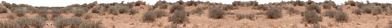
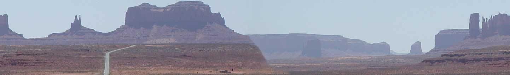

Dave Richardson
@djradon


Web Portfolio
Madison Logic Directories Platform
Custom CMS, Design
(2009)
UNICEF Content Management
Course Design, Training Videos and Documentation
(2004)
UNFCU: Mortgage Center
HTML, Javascript
(2003)
The Namugongo Project
Design, HTML
(2002)
Igby Goes Down: Diary
"Web site programming"
(2001)
The Hawai'i Millennium Commission
Site and eCommerce programming
(2000)
Redspark
Design, HTML
(2000)
ClientNet
Extranet (LAMP)
(1997-1998)
KZSU 90.1fm
Design, HTML, Perl
(1995-1997)
Slamdance Film Festival
Slamdance.com (1999-2007)
Custom CMS (JScript/ASP), SQL Server, HTML
Anarchy Online Film Festival (2000-2007)
One of the earliest online film festivals, streaming media
Festival 2007: Lucky #13
Festival 2006: Lucha Libre
Designed this one myself!
Festival 2005: Way of the Dragon
Festival 2004: X
Festival 2003: Director's Chair
Festival 2002: Travel Trailer
Festival 2001: UPC
Festival 2000: Slamdance Tribe
Festival 1999: Suprematism
Radio Shows
Underbrush
(1996-1997)
No Alternative
(1996)
Maple Serum
(1994-1995)
Personal
Sputnik the Dog
Links
Mastodon
Dev
Medium
LinkedIn
IMDB
Wikipedia
{kind=link}